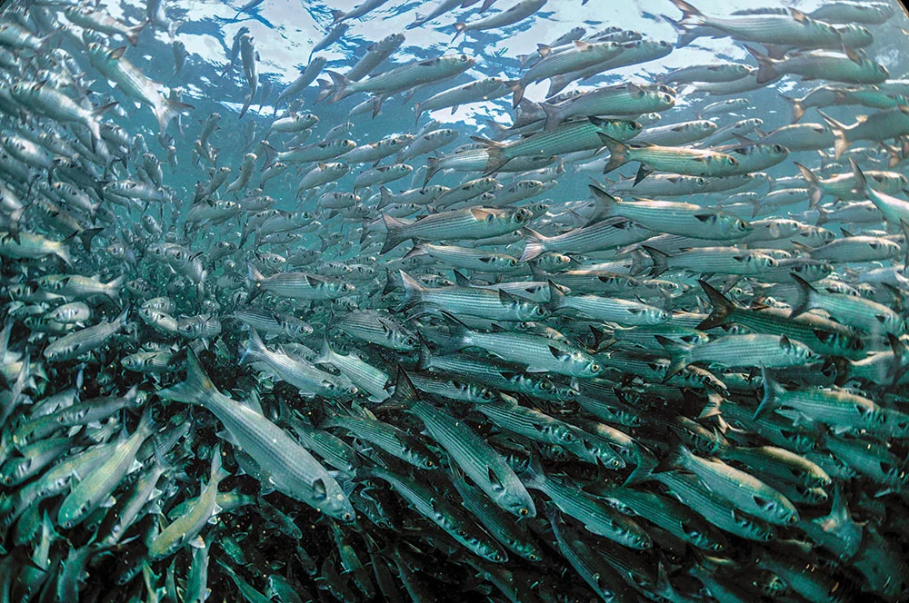

Positive Impacts
- Habitat Renewal: Floodwaters can deposit sediments and nutrients, rejuvenating and enriching the soil in floodplain and wetland ecosystems. This can stimulate plant growth and promote biodiversity.
- Breeding and Reproduction: For many aquatic and amphibious species, floods create ideal conditions for breeding and reproduction. Floodplains and wetlands are crucial breeding grounds for species like fish, waterfowl, and amphibians.
- Fish Migration : Floods can help fish migrate upstream to spawning grounds by increasing water levels and providing access to previously blocked areas.
- Food Availability :Floods can introduce organic matter and food sources into aquatic ecosystems, benefiting various wildlife, including aquatic insects, fish, and waterfowl.
- Diverse Habitats : Floods can create a mosaic of habitats, with varying levels of moisture and vegetation, which can support a wide range of plant and animal species.
- Ecosystem Health: Natural flooding helps maintain the health and resilience of ecosystems by cycling nutrients, controlling invasive species, and promoting biodiversity.
- Aquatic Biodiversity: Floods play a role in the life cycles of many aquatic organisms, including those that depend on flood pulses for their survival.
- Floodplain Forests: Flooding can regenerate and maintain floodplain forests, which provide habitat for numerous bird species, mammals, and insects.

Fish Migration during Floods
It's important to note that these positive impacts of floods on wildlife are associated with natural, seasonally occurring floods in ecosystems that have evolved to depend on these flood events. Human intervention and alterations to natural flood regimes can disrupt these benefits, leading to negative consequences for wildlife and ecosystems.